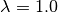

Tools
In the $PROTOMSHOME/tools folder we have collect a range of useful scripts to setup and analyse ProtoMS simulations. Many of them are used by the protoms.py setup script. In this page we have collected the documentation for these tools with the user as a focus. Developers might be interested in looking at the Python code manual in the .doc folder.
build_template.py
Syntax:
build_template.py -p prepifile [-f frcmodfile] [-z zmatfile] [-o outfile] [-n name] [-t trans] [-r rot]
Examples:
build_template.py -p benzene.prepi
build_template.py -p benzene.prepi -f benzene.frcmod
build_template.py -p benzene.prepi -f benzene.frcmod -o benzene.template -n BNZ
build_template.py -p benzene.prepi -f benzene.frcmod -t 1.0 -r 10
Description:
This tool builds a ProtoMS template file for a solute given an Amber prepi file.
If the solute needs parameter not in the GAFF release, they should be supplied with the frcmodfile.
The tool will automatically make an appropriate z-matrix for Monte Carlo sampling. This works in most situations. However, if something is not working properly with the generated z-matrix, one can be supplied in the zmatfile
The default translational and rotational displacements are based on experience and should be appropriate in most situations.
calc_bar.py
Syntax:
calc_bar.py [-d directory] [-r results] [-s nskip] [-m nmax] [-t temperature] [-b nbootstraps] [-pw] [-pu] [-pl]
- -d directory = name of output directory of the simulation
optional, default = current working directory (.)
- -r results = the beginning of the name of the file to analyse
optional, default = results_inst
- -s nskip = the number of snapshots to skip at the beginning of the simulation
optional, default = 0
- -m nmax = the maximum number of snapshots to process
optional, default = the total number of snapshot in the results file, excluding nskip
- -t temperature = the simulation temperature in degree Celsius
optional, default = 25 degrees
- -b nbootstraps = the number of bootstraps samples to use in uncertainty estimation
optional, default = 100
- -pw = flag that turns off the printing of individual free energies between windows
optional, default = on
- -pu = flag that turns off the printing of uncertainties
optional, default = on
- -pl = flag that turns off the printing of
 -values
-values
optional, default = on
Examples:
calc_bar.py -d out_free/
calc_bar.py -s 200
calc_bar.py -m 200
calc_bar.py -d out_free/ -pw
Description:
This tool calculates free energies using the Bennets Acceptance Ratio (BAR) method.
The program expects that in the directory there exist an output folder for each -value, eg. lam-0.000 and lam-1.000
The uncertainty of the free energies is estimated by boostrapping the energy differnces. The number of bootstrap samples is set by the nbootstraps argument. The procedure is rather slow, so in order to obtain a quick estimate of the free energy, lower this value.
Block estimates can be constructed by combining nskip and nmax. For instance, these commands calculates block estimates with a block size of 5 m snapshots
for X in 0 50 100 150 200 250 300 350
do
calc_bar.py -d out_free -nskip $X -nmax 50 -b 5 -pw -pu
done
calc_clusters.py
Syntax:
calc_clusters.py -f file1 [file2 ...] [-o outfile] [-m molecule] [-a atom] [-t type] [-c cutoff] [--skip N] [--max N]
- -f file1 file2 ... = name(s) of PDB-file(s) containing simulation snapshots
at least one file needs to be specified
can read a PDB trajectory
- -o outfile = the produced clusters in PDB format
optional, clusters.pdb
- -m molecuke = the name of the molecule to cluster
optional, default = wat
- -a atom = the name of the atom in the residue to cluster
optional, no default
if not specified, the entire molecule will be clustered
- -t type = the clustering algorith
optional, default = average
can be any of average, single, complete, weighted and centroid
- -c cutoff = the cluster cut-off
optional, default = 2.0 A
- --skip N = skip N snapshots at the beginning of the simulation
optional, default = 0
- --max N = read and process a maximum of N snapshots
optional, default = 99999
Examples:
calc_clusters.py -f all.pdb
calc_clusters.py -f all.pdb all2.pdb
calc_clusters.py -f all.pdb -o all_clusters.pdb
calc_clusters.py -f all.pdb -t complete
Description:
This tool cluster molecules from a simulation
It will extract the coordinates of all atoms with name equal to atom in residues with name equal to molecule in all input files and cluster them using the selected algorithm. If no atom is specified, the entire molecule will be clustered. By default this atom and residue name is set to match GCMC / JAWS output with the standard water template.
calc_density.py
Syntax:
calc_density.py -f file1 [file2 ...] [-o outfile] [-r residue] [-a atom] [-p padding] [-s spacing] [-e extent] [-n norm] [-t sphere|gaussian] [--skip N] [--max N]
- -f file1 file2 ... = name(s) of PDB-file(s) containing simulation snapshots
at least one file needs to be specified
can read a PDB trajectory
- -o outfile = the produced density in DX-format
optional, default = grid.dx
- -r residue = the name of the residue to make a grid on
optional, default = wat
- -a atom = the name of the atom in the residue to make a grid on
optional, default = o00
- -p padding = the amount to increase the minimum box in each dimension
optional, default = 2.0 A
- -s spacing = the grid resolution
optional, default = 0.5 A
- -e extent = the size of the smoothing
optional, default = 1.0 A
- -n norm = the normalisation constant
optional, default = the number of snapshot processed
- -t sphere|gaussian = the type of coordinate smoothing
optional, default = sphere
sphere = spherical smoothing with extent radius
gaussian = smoothing with Gaussian with standard deviation = extent
- --skip N = skip N snapshots at the beginning of the simulation
optional, default = 0
- --max N = read and process a maximum of N snapshots
optional, default = 99999
Examples:
calc_density.py -f all.pdb
calc_density.py -f all.pdb all2.pdb
calc_density.py -f all.pdb -o gcmc_density.dx
calc_density.py -f all.pdb -r t4p -n o00
calc_density.py -f all.pdb -p 1.0 -s 1.0
calc_density.py -f all.pdb -e 0.5 -t gaussian
calc_density.py -f all.pdb -n 100
Description:
This tool discretises atoms on a grid, thereby representing a simulation output as a density.
It will extract the coordinates of all atoms with name equal to atom in residues with name equal to residue in all input files and discretise them on a grid. By default this atom and residue name is set to match GCMC / JAWS output with the standard water template.
The produced density can be visualized with most programs, e.g.
calc_dg.py
Syntax:
calc_dg.py [-d directory directory2 ...] [-r results] [-e ti|bar|mbar] [-s nskip] [-m nmax] [-t temperature] [-b nbootstraps] [-pe] [-pg] [-gr] [--analytical] [--numerical both|back|forw ]
- -d directory directory2 ... = name of output directories of simulations
optional, default = current working directory (.)
one or more directories can be specified
- -r results = the beginning of the name of the file to analyse
optional, default = results_inst
- -e ti|bar|mbar = the free energy estimator
optional, default = ti bar mbar
one or more estimators can be specified
- -s nskip = the number of snapshots to skip at the beginning of the simulation
optional, default = 0
- -m nmax = the maximum number of snapshots to process
optional, default = the total number of snapshot in the results file, excluding nskip
- -t temperature = the simulation temperature in degree Celsius
optional, default = 25 degrees
- -b nbootstraps = the number of bootstraps samples to use in uncertainty estimation
optional, default = 100
- -pe = flag that turns off the printing of free energy for each directory
optional, default = on
- -pg = flag that turns off the printing of the gradient
optional, default = on
- -gr = flag that turns on the plotting of the gradient
optional, default = off
--analytical = turns on the use of analytical gradients
optional, default = off
--numerical = turns on the use of numerical gradients and selects the kind
optional, default = both
both = uses the free energy in both backward and forward direction to compute the free energy gradient
back = uses the free energy in the backward direction to compute the free energy gradient
forw = uses the free energy in the forward direction to compute the free energy gradient
Examples:
calc_dg.py -d out_free/
calc_dg.py -d out_free1/ out_free2/ out_free3/ -s 200
calc_dg.py -d out_free1/ out_free2/ out_free3/ -m 200
calc_dg.py -d out_free1/ out_free2/ out_free3/ -e ti bar
Description:
This tool calculates free energies using the method of thermodynamic integration (TI), Bennet’s Acceptance Ratio (BAR) and Multi BAR (MBAR).
The program expects that in the directory, directory2 etc. there exist an output folder for each -value, eg. lam-0.000 and lam-1.000
If the -gr flag is set the gradient with respect to is plotted and saved to a file called gradient.png
The MBAR estimator only works if PyMBAR is properly installed and can be loaded as a python library.
calc_gcsingle.py
Syntax:
calc_gcsingle.py -d directories [-f file] [-s nskip] [-r A B] [--plot]
- -d directories = the output directories from GCMC
- -f file = the name of ProtoMS results file
optional, default =results
- -s nskip = the number of initial snapshots to discard
optional, default = 0
- -r A B = the range of the Adams value to make the estimate on
optional
if not set the program will use all data
- --plot = whether to plot the estimated excess chemical potential
optional, default = yes
Examples:
calc_gcsingle.py -d out_gcmc
calc_gcsingle.py -d out_gcmc -s 100
calc_gcsingle.py -d out_gcmc -r -8 -12
Description:
This tool analyse and plot free energies from GCMC simulations
calc_replicapath.py
Syntax:
calc_replicapath.py -f file1 [file2 ...] -p replica1 [replica2 ...] -k lambda [-o outfile]
- -f file1 file2 ... = the name(s) of ProtoMS results file(s)
at least one file needs to be given
- -p replica1 replica2 ... = the replica values to plot
at least one replica value needs to be given
- -k lambda = the kind of replicas
optional, default = lambda
lambda = replica exchange replicas
- -o outfile = the name of a PNG file to write the replica paths
optional, default = replica_path.png
Examples:
calc_replicapath.py -f out_free/lam-0.*/results -p 0.000 1.000
calc_replicapath.py -f out_free/lam-0.*/results -p 0.000 0.500 1.000 -o replica_paths.png
Description:
This tools plots the path of different replicas in a replica exchange simulation as a function of simulation time.
At the moment only paths from a replica exchange simulation is supported. Hence, the -k argument is reduntant.
If the kind of replicas is from replica exchange the replica1 and replica2 etc should be individual -values to plot.
calc_rmsd.py
Syntax:
calc_rmsd.py -i pdbfile -f file1 [file2 ...] -l ligand [-a atom] [-t temperature]
- -i pdbfile = the reference, initial PDB file
- -f file1 file2 ... = the name(s) of ProtoMS results file(s)
at least one file needs to be given
- -l ligand = the residue name of the ligand
- -a atom = the atom to calculate the RMSD of
optional, if not set the program will calculate the RMSD of the geometric center
- -t temperature = the simulation temperature in K
optional, default = 298 K
Examples:
calc_rmsd.py -i benzene.pdb -f out_bnd/all.pdb -r bnz
calc_rmsd.py -i benzene.pdb -f out_bnd/all.pdb -r bnz -a c4
Description:
This tool calculate the RMSD of a ligand in a simulation.
If the atom name is given, the tool will calculate the RMSD of that atom with respect to its position in pdbfile. Otherwise, the program will calculate the RMSD of the geometric centre with respect to pdbfile.
A force constant to keep the ligand constrained is estimated from the RMSD using the equipartition theorem.
calc_series.py
Syntax:
calc_series.py -f file1 [file2 ...] [-o outprefix] [-s series series2 ...] [-p sep|sub|single|single_first0|single_last0] [--nperm N] [--threshold N] [--average] [--moving windowsize]
- -f file1 file2 ... = the name(s) of ProtoMS result file(s)
at least one name needs to be given
- -o outprefix = the prefix of the created PNG-files
optional, default = results
- -s serie series2 ... = the name of the series to plot
optional, no default
- -p sep|sub|single|single_first0|single_last0 = the type of plot if plotting multiple series
optional, no default
sep = separate plots
sub = sub plots
single = all series in one plot
single_first0 = all series in one plot, but make the first value zero
single_last0 = all series in one plot, but make the last value zero
- --nperm N = the number of permutation tests to determine equilibration
optional, default = 0 (use analytical test)
- --threshold N = the signficance level for testing equilibration
optional, default = 0.05
- --average = flag that turns on plotting running averages of the series
optional, default = off (plot raw series)
- --moving windowsize = turns on plotting of moving averages with a specific window size
optional, default = off (plot raw series)
Examples:
calc_series.py -f results
calc_series.py -f results -s total gradient
calc_series.py -f results -s total gradient -p sub
calc_series.py -f lam-*/results -s gradient
Description:
This tools plots and analyses time series.
The series to plot is selected by the -s flag. Basically any property written to the ProtoMS results file can be plotted, e.g. energies, volume, gradients etc. If the -s flag is not specified, a wizard will display all available series that can be plotted. This can be useful if one is unsure what the name of the series is.
The tool can plot multiple series and there is five choices how produce these plots, set by the -p flag. If the sep multiple PNG files will be created, one for each series. With all other choices, one PNG file is created. If the -p flag is not specified on the command line, a wizard will prompt the user for the different options.
All plotted data series will also be written to disc. If sep is used, separate files will be written as well.
For each time series, the tool will estimate the equilibration time. It will do this by performing a statistical test based on the rank order of the series. If the series is equilibrated it will have a slope close to zero and the Kendall’s τ will be zero. When the equilibration time has been determined, the tool will estimate the number of independent samples in the production part using the method of statistical inefficiency. The equilibration time will also be estimated from a method that maximizes the number uncorrelated samples as suggested on alchemistry.org.
Apart from the raw series, the tool can also plot the running average if the --average flag is set or the moving average if the --moving flag is used.
Typically only a single ProtoMS results file will be analysed and plotted. However, for the series grad and agrad (the gradient and analytical gradient, respectively), multiple results file can be given. In this case, the gradients for each results file is used to estimate the free energy using thermodynamic integration.
calc_ti.py
Syntax:
calc_ti.py [-d directory] [-r results] [-s nskip] [-m nmax] [-pg] [-pp] [-pl] [-pu] [-gr] [--analytical] [--numerical both|back|forw ]
- -d directory = name of output directory of the simulation
optional, default = current working directory (.)
- -r results = the beginning of the name of the file to analyse
optional, default = results_inst
- -s nskip = the number of snapshots to skip at the beginning of the simulation
optional, default = 0
- -m nmax = the maximum number of snapshots to process
optional, default = the total number of snapshot in the results file, excluding nskip
- -pg = flag that turns off the printing of the gradient
optional, default = on
- -pp = flag that turns off the printing of the PMF
optional, default = on
- -pl = flag that turns off the printing of -values
optional, default = on
- -pu = flag that turns off the printing of uncertainties
optional, default = on
- -gr = flag that turns on the plotting of the gradient
optional, default = off
--analytical = turns on the use of analytical gradients
optional, default = off
--numerical = turns on the use of numerical gradients and selects the kind
optional, default = both
both = uses the free energy in both backward and forward direction to compute the free energy gradient
back = uses the free energy in the backward direction to compute the free energy gradient
forw = uses the free energy in the forward direction to compute the free energy gradient
Examples:
calc_ti.py -d out_free/
calc_ti.py -s 200
calc_ti.py -m 200
calc_ti.py -d out_free/ --analytical
Description:
This tool calculates free energies using the method of thermodynamic integration (TI).
The program expects that in the directory there exist an output folder for each -value, eg. lam-0.000 and lam-1.000
If the -gr flag is set the gradient with respect to is plotted and saved to a file called gradient.png
Block estimates can be constructed by combining nskip and nmax. For instance, these commands calculates block estimates with a block size of 5 m snapshots
for X in 0 50 100 150 200 250 300 350
do
calc_bar.py -d out_free -nskip $X -nmax 50 -b 5 -pw -pu
done
clear_gcmcbox.py
Syntax:
clear_gcmcbox.py -b boxfile -s waterfile [-o outfile]
Examples:
clear_gcmcbox.py -b gcmc_box.pdb -w water.pdb
clear_gcmcbox.py -b gcmc_box.pdb -w water.pdb -o water_cleared.pdb
Description:
This tool clears a GCMC or JAWS-1 simulation box from any bulk water placed there by the solvation method.
In a GCMC and JAWS-1 simulation the bulk water is prevented to enter or exit a GCMC or JAWS-1 simulation box. Therefore, bulk water that are within this box needs to be removed prior to the GCMC or JAWS-1 simulation.
The boxfile is typically created by make_gcmcbox.py and the waterfile is typically created by solvate.py and can be either a droplet or a box
convertatomnames.py
Syntax:
convertatomnames.py -p pdbfile [-o outfile] [-s style] [-c conversionfile]
Examples:
convertatomnames.py -p protein.pdb
convertatomnames.py -p protein.pdb -c $PROTOMSHOME/data/atomnamesmap.dat
convertatomnames.py -p protein.pdb -s charmm
Description:
This tool converts residue and atom names to ProtoMS convention.
This script modfies in particular names of hydrogen atoms, but also some residue names, e.g. histidines.
A file containing conversion instructions for amber and charmm is available in the $PROTOMSHOME/data folder.
convertwater.py
Syntax:
convertwater.py -p pdbfile [-o outfile] [-m model] [--ignoreh]
Examples:
convertwater.py -p protein.pdb
convertwater.py -p protein.pdb -m tip3p
convertwater.py -p protein.pdb --ignoreh
Description:
This tool converts water molecules to a specific model.
Currently the script recognizes TIP3P and TIP4P water models. The valid values for style is therefore t4p, tip4p, tp4, t3p, tip3p, tp3
If the --ignoreh flag is given, the script will discard the hydrogen atoms found in pdbfile and add them at a random orientation.
distribute_waters.py
Syntax:
distribute_waters.py -b box -m molecules [-o outfile] [--model t3p|t4p ] [--resname resname] [--number number]
-b box = the dimensions of the box where the (water) molecules will be distributed. Six arguments expected: origin (x,y,z) & length (x,y,z)
-m molecules = either the file containing the molecules to distribute, or the number of water molecules to distribute in the box
- -o outfile = the name of the file where the distributed molecules will be saved
optional, default = ghostmolecules.pdb
- --model t3p|t4p = the water model used when a number is especified in ‘-m molecules’
optional, default = t4p
t4p = tip4p water model
t3p = tip3p water model
- --resname resname = the residue name used in the outfile when a number is especified in ‘-m molecules’
optional, default = WAT
- --number number = the required number of molecules in the box when it differs from the number of molecules in the file specified in ‘-m molecules’
optional, default = None (only the molecules in the file will be distributed in the box)
Examples:
distribute_waters.py -b 53.4 56.28 13.23 10 10 10 -m 12
distribute_waters.py -b 53.4 56.28 13.23 10 10 10 -m 12 --model t3p --resname T3P
distribute_waters.py -b 53.4 56.28 13.23 10 10 10 -m myonewater.pdb --number 12 -o mywatersinbox.pdb
Description:
This tool can place water molecules at random within a GCMC or JAWS-1 simulation box.
It can place molecules in random positions and orientations with their geometry center restricted to the given dimensions of a box.
divide_pdb.py
Syntax:
divide_pdb.py [-i input] [-o output] [-p path]
- -i input = the name of your multi-pdb file
optional, default = all.pdb
- -o output = the beginning of the name of your individual pdb files
optional, default = snapshot_
- -p path = the directory where the input should be found and the output printed
optional, default = ./
Examples:
- ::
- divide_pdb.py
divide_pdb.py -i mypmsout.pdb -o individual -p outfolder/
Description:
This tool splits up a PDB file with multiple models (the keyword END defines the end of a model) into several PDB files.
make_dummy.py
Syntax:
make_dummy.py -f pdbfile [-o outfile]
Examples:
make_dummy.py -f benzene.pdb
make_dummy.py -f benzene.pdb -o benzene_dummy.pdb
Description:
This tool makes a matching dummy particle for a solute.
The dummy particle will be placed at the centre of the solute.
make_gcmcbox.py
Syntax:
make_gcmcbox.py -s pdbfile [-o outfile] [-p padding]
Examples:
make_gcmcbox.py -s benzene.pdb
make_gcmcbox.py -s benzene.pdb -p 0.0
make_gcmcbox.py -s benzene.pdb -o benzene_gcmc_box.pdb
Description:
This tool makes a GCMC or JAWS-1 simulation box to fit on top of a solute.
The box will be created so that it has the extreme dimensions of the solute and then padding will be added in each dimension
The box can be visualised with most common programs, e.g.
vmd -m benzene.pdb benzene_gcmc_box.pdb
this is a good way to see that the box is of appropriate dimensions.
When an appropriate box has been made, it can be used by solvate.py to fill it with water.
make_single.py
Syntax:
make_single.py -t0 template0 -t1 template1 -p0 pdbfile0 -p1 pdbfile1 [-m map] [-o outfile]
-t0 template0 = the name of a ProtoMS template file of solute at 
-t1 template1 = the name of a ProtoMS template file of solute at 
-p0 pdbfile0 = the name of a PDB file of the solute at
-p1 pdbfile1 = the name of a PDB file of the solute at 
- -m map = the name of a correspondence map
optional, no default
- -o outfile = the start of the name of the created single-topology templates
optional, default = single
Examples:
make_single.py -t0 benzene.tem -t1 toluene.tem -p0 benzene.pdb -p1 toluene.pdb
make_single.py -t0 benzene.tem -t1 toluene.tem -p0 benzene.pdb -p1 toluene.pdb -m bnz2tol.dat
make_single.py -t0 benzene.tem -t1 toluene.tem -p0 benzene.pdb -p1 toluene.pdb -o bnz-tol
Description:
This tool makes ProtoMS template files for single topology free energy simulations.
The program will automatically try to match atoms in template0 with atoms in template1. It will do this by looking for atoms with the same atom type that are on top of each other in pdbfile0 and pdbfile1. A cut-off of 0.02 A2 will be used for this. All atoms that cannot be identified in this way are written to the screen and the user has to enter the corresponding atoms. If no corresponding atom exists, i.e., the atom should be perturbed to a dummy, the user may enter blank.
The user may also write the corresponding atoms to a file and provide it as map above. In this file there should be one atom pair on each line, separated by white-space. A dummy atom should be denoted as DUM. If map is not given, the program will write the created correspondence map to a file based on the outfile string.
Currently, dummy atoms are not supported in the solute at . Therefore, this solute needs to be the larger one.
The tool will write two ProtoMS template files, one for the electrostatic perturbation, one for the van der Waals perturbation and one for the combined perturbation. These template files will end in _ele.tem, _vdw.tem, _comb.tem respectively.
A summary of the charges and van der Waals parameters in the four states will be printed to the screen. This information should be checked carefully.
merge_templates.py
Syntax:
merge_templates.py -f file1 file2 [file3 ...] -o outfile
- -f file1 file2 file3 ... = the ProtoMS template files that should be merged
- -o outfile = the name of the merged ProtoMS templatefile
Examples:
merge_templates.py -f benzene.tem dummy.tem -o bnz-dummy.tem
Description:
This tool combines several ProtoMS template files into a single template file.
The force field parameters in file2 will be re-numbered so that they do not conflict with file1. This is important when you want to load both parameters into ProtoMS at the same time.
pms2pymbar.py
Syntax:
pms2pymbar.py [-d directory] [-r results] [-o outfile] [-s nskip] [-m nmax] [-t temperature] [--run]
- -d directory = name of output directory of the simulation
optional, default = current working directory (.)
- -r results = the beginning of the name of the file to analyse
optional, default = results
- -o outfile = the name of file with all energy values
optional, default = pymbar_energy
- -s nskip = the number of snapshots to skip at the beginning of the simulation
optional, default = 0
- -m nmax = the maximum number of snapshots to process
optional, default = the total number of snapshot in the results file, excluding nskip
- -t temperature = the simulation temperature in degree Celsius
optional, default = 25 degrees
- --run = flag indicating if to run pymbar
optional, default = No
- --nobar = flag indicating if to estimate BAR
optional, default = No
Examples:
pms2pymbar.py -d out_free/
pms2pymbar.py -s 200
pms2pymbar.py -m 200
pms2pymbar.py -d out_free/ --run
Description:
This tool extract free energy data from ProtoMS output files and makes them compatible with the PyMBAR software.
The program expects that in the directory there exist an output folder for each -value, eg. lam-0.000 and lam-1.000
The tool writes a file outfile to each folder in directory that is human readable. It contains some header information such as units, current -value and total number of &lambda-values. It then contains one row for each snapshot and each of these rows contains a column with the total energy at a specific -value., one column for each -value. These files can then be read by PyMBAR.
Alternatively, if PyMBAR is properly installed and can be loaded as a python library, the user can add the --run flag and the tool will automatically feed PyMBAR with the energy values and compute the free energy using MBAR.
scoop.py
Syntax:
scoop.py -p proteinfile [-l ligandfile] [-o outfile] [--center center] [--innercut icut] [--outercut ocut] [--flexin sidechain|flexible|rigid] [--flexout sidechain|flexible|rigid] [--terminal keep|doublekeep|neutralize] [--excluded res1 res2 ...] [--added res1 res2 ...]
Examples:
scoop.py -p protein.pdb
scoop.py -p protein.pdb -l benzene.pdb
scoop.py -p protein.pdb --center "0.0 0.0 0.0"
scoop.py -p protein.pdb --center origin.dat
scoop.py -p protein.pdb --innercut 10 --outercut 16
scoop.py -p protein.pdb --exclude 189 190
scoop.py -p protein.pdb --added 57 58 59
Description:
This tool truncates a protein and thereby creating a scoop.
All residues outside ocut is removed completely. icut is used to separate the scoop model into two different regions, that possibly can have different sampling regimes. The sampling regimes are determined by --flexin and --flexout.
If the user would like to finetune the residues in the scoop this can be done with --excluded to discard specific residues or --added to include specific residues.
The scoop will be centred on the ligandfile is such a file is provided. Otherwise, it will be centred on the flag --center. The argument to this flag can be either a string with three numbers specifying the centre, as in example three above. It can also be the name of a file containing the centre, as in example four above.
Crystallographic waters that are in proteinfile will also be truncated at ocut
The PDB file will contain specific instructions for ProtoMS to automatically enforce the values of --flexin and --flexout.
solvate.py
Syntax:
solvate.py -b boxfile [-s solutefile] [-pr proteinfile] [-o outfile] [-g box|droplet|flood] [-p padding] [-r radius] [-center] [-n Amber|ProtoMS]
Examples:
solvate.py -b $PROTOMSHOME/data/wbox_tip4p.pdb -s benzene.pdb
solvate.py -b $PROTOMSHOME/data/wbox_tip4p.pdb -s benzene.pdb -p 12.0
solvate.py -b $PROTOMSHOME/data/wbox_tip4p.pdb -s benzene.pdb -pr protein.pdb -g droplet
solvate.py -b $PROTOMSHOME/data/wbox_tip4p.pdb -s benzene.pdb -pr protein.pdb -g droplet -r 24.0
solvate.py -b $PROTOMSHOME/data/wbox_tip4p.pdb -pr protein.pdb -g droplet -c 0.0
solvate.py -b $PROTOMSHOME/data/wbox_tip4p.pdb -pr protein.pdb -g droplet -c "0.0 10.0 20.0"
solvate.py -b $PROTOMSHOME/data/wbox_tip4p.pdb -pr protein.pdb -g droplet -c "76 86"
solvate.py -b $PROTOMSHOME/data/wbox_tip4p.pdb -s gcmc_box.pdb -g flood
Description:
This tool solvates a ligand in either a droplet or a box of water. It can also flood a GCMC or JAWS-1 simulatios box with waters.
Pre-equilibrated boxes to use can be found in the $PROTOMSHOME/data folder.
To solvate small molecule it is sufficient to give the solutefile as in the first example above. This produces a box with at least 10 A between the solute and the edge of the water box, which should be sufficient in most situation. Use padding to increase or decreas the box size as in the second example. The solvation box is created by replicating the pre-equilibrated box in all dimensions and then removing waters that overlap with solute atoms.
To solvate a protein in a droplet, specify proteinfile and droplet as in the third example above. This produces a droplet with radius of 30 A, which was choosen to work well with the default options in scoop.py. Use radius to obtain a smaller or larger droplet as in the fourth example. The centre of the droplet can be on a ligand if ligandfile is specified. Otherwise, the center``argument is used. This argument can be either ``cent (the default) that places the droplet at the centre of the protein. It can also take a single number as in the fifth example above in case it is placed at this coordinate in all dimensions. It can also take a string with three numbers which is the origin of the droplet in x, y, and z dimensions, see the sixth example above. If two numbers are given as in the seventh example above, it is assumed that this is an atom range and the droplet will be placed at the centre of these atoms. The droplet is created by putting random waters from the pre-equilibrated box on a grid, displacing them slightly in a random fashion.
The tool can also be used to fill a box with waters for GCMC and JAWS-1 simulations, similar to distribute_waters.py. In this case the solute is typically a box created by make_gcmcbox.py and flood needs to be specified, see the last example above. This gives a box filled with the bulk number of waters.
split_jawswater.py
Syntax:
split_jawswater.py -w pdbfile [-o outprefix]
Examples:
split_jawswater.py -w waters.pdb
split_jawswater.py -w waters.pdb -o jaws2_
Description:
This tool splits a PDB file containing multiple water molecules into PDB files appropriate for JAWS-2.
For each water molecule in pdbfile the tool will write a PDB file with individual water molecules named outprefix+watN.pdb where N is the serial number of the water molecule. Furthermore, the tool will write a PDB file with all the other molecules and name if outprefix+notN.pdb where again N is the serial number of the water molecule. In these latter PDB-files, the water residue name is changed to that of the bulk water, e.g., t3p or t4p.
For instance, if waters.pdb in the second example above contains 3 water molecule, this tool will create the following files:
jaws2_wat1.pdb
jaws2_wat2.pdb
jaws2_wat3.pdb
jaws2_not1.pdb
jaws2_not2.pdb
jaws2_not3.pdb